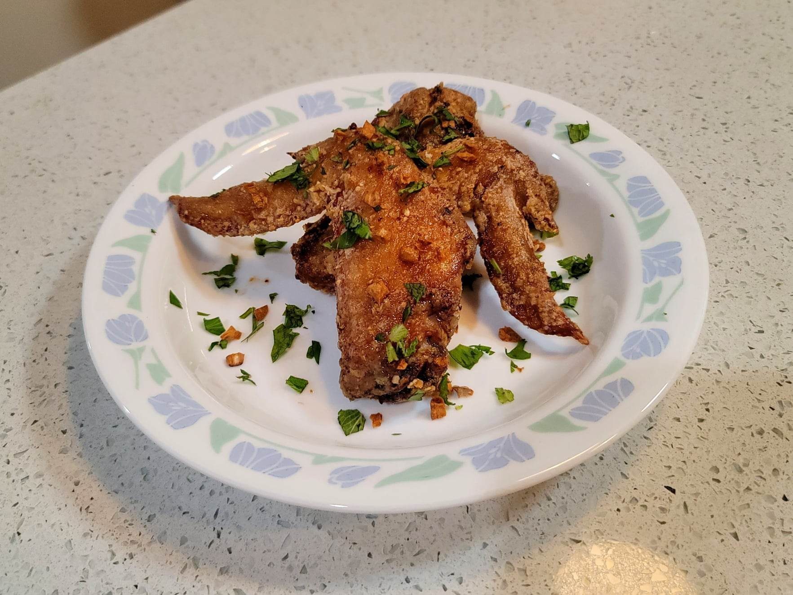

Pok Pok Wings

Ingredients:
Marinade:
- 1 1/2 Chicken wings, cut at the joint where the drumette and the wingette meet
- 1/4 cup Fish sauce
- 1/4 cup Powdered sugar
- 5 cloves Garlic, grated
Other Ingredients:
- 2 tbsp Oil, + more for deep frying
- 3 cloves Garlic, minced
- 1/3 cup Cornstarch, or as needed
- 1 tbsp Cilantro, finely chopped
- 1 tbsp Mint, finely chopped
Instructions:
- Combine the marinade ingredients and let marinate in a refrigerator overnight.
- Heat 2 tbsp oil in a very small pan over medium/medium-low heat. Add the garlic and let fry for about 3 minutes, or until golden. Then remove from the oil and reserve both the garlic and the oil.
- In a pot, add 2 inches of oil and heat to 350 degrees Fahrenheit. While it come to temperature, remove the chicken from the marinade while reserving the marinade. Pat the chicken dry with paper towels and then dredge them well in the cornstarch. Fry the chicken in batches, about 10 minutes per batch. Then transfer to a paper towel lined plate before transferring to a bowl.
- Place the reserved marinade into a small pot along with the garlic oil. Heat over medium-high heat and cook until it thickens into a syrup, about 4-5 minutes. Then pour the sauce over the wings and toss to coat.
- Garnish with cilantro, mint, and the fried garlic. Serve immediately.